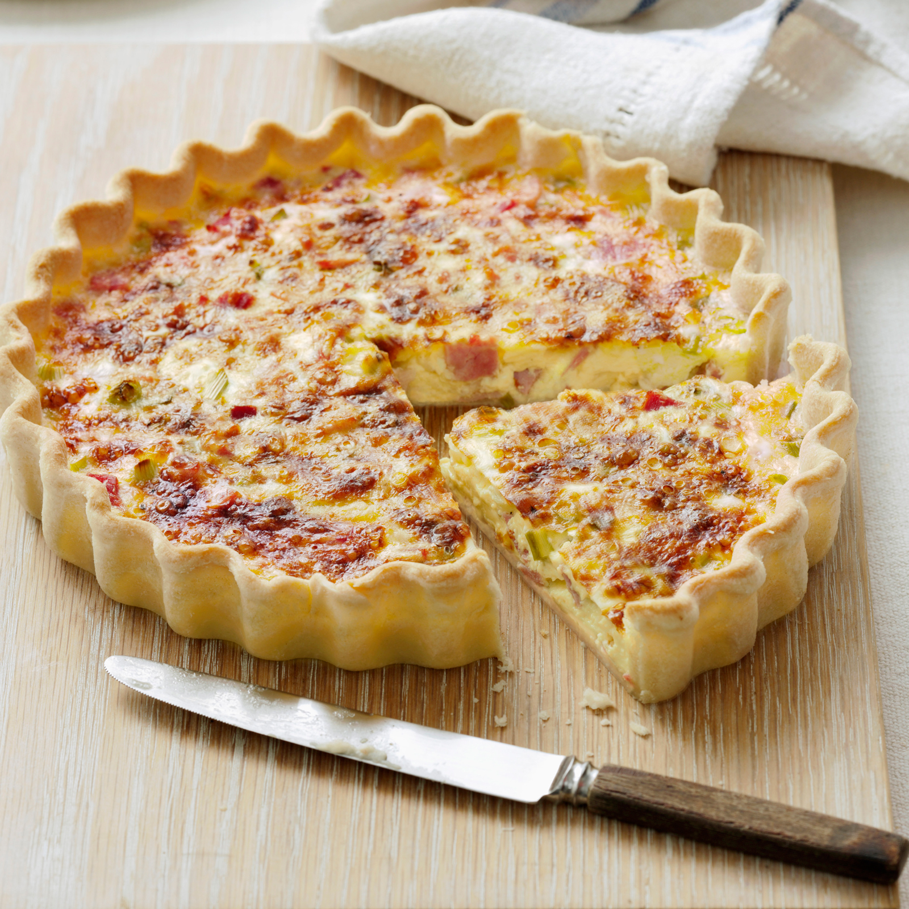

<!DOCTYPE html>
<html lang="Français">
  <head>
    <meta charset="UTF-8" />
    <meta http-equiv="X-UA-Compatible" content="IE=edge" />
    <meta name="viewport" content="width=device-width, initial-scale=1.0" />
    <title>Foodie Blog</title>
    <link rel="stylesheet" href="style.css" />
    <script src="https://kit.fontawesome.com/07cecfdf00.js" crossorigin="anonymous"></script>

  </head>
</html>

<body>
  <nav class="navbar">
    <h1>Foodie blog</h1>
    <ul>
      <li class="active"><a href="#Homepage">Home</a></li>
      <li><a href="#aboutthewebsite">About</a></li>
      <li><a href="#thefrenchrecipes">Recipes</a></li>
      <li><a href="#shoopingitems">Shopping</a></li>
    </ul>
  </nav>
  <div class="searchsection">
    <input
      type="search"
      id="site-search"
      name="q"
      aria-label="Search through site content"
      autocomplete="off"
      placeholder="Recipies ideas..."
    />
    <button>Search</button>
  </div>
<main id="Homepage">
  <div id="aboutthewebsite">
    This blog was created by a bunch of cooking enthusiasts to share our
    personal &amp; authentic family recipes, that we love, with our passionate
    readers.
    <br />
    Here you can find plenty of recipe ideas for numerous dishes from worldwide
    cuisine, that is of course suitable for all tastes, from meat lovers to
    vegans, to keto-friendly and vegetarian dishes.
    <br />
    More ideas of tasty recipes can be found also on our adjacent website
    <a href=" https://www.marmiton.org/" target="_blank">“Marmiton”.</a>
  </div>

  <div class="slideshow">
      
    <div class="mySlides">
      <div class="numbertext">1 / 7</div>
      
    </div>
    <div class="mySlides">
      <div class="numbertext">2 / 7</div>
      
    </div>
    <div class="mySlides">
      <div class="numbertext">3 / 7</div>
      
    </div>
    <div class="mySlides">
      <div class="numbertext">4 / 7</div>
      
    </div>
   
    <div class="mySlides">
      <div class="numbertext">5 / 7</div>
      
    </div>
  
    <div class="mySlides">
      <div class="numbertext">6 / 7</div>
      
    </div>
    <div class="mySlides">
      <div class="numbertext">7 / 7</div>
      
    </div>

    <div class="caption-container">
      <p id="caption"></p>
    </div>
    <div class="row">
    

      <div class="column">
        
      </div>

      <div class="column">
        
      </div>

      <div class="column">
        
      </div>

      <div class="column">
        
      </div>
      <div class="cursormvt">
        <a class="prev" onclick="plusSlides(-1)">❮</a>
        <a class="next" onclick="plusSlides(1)">❯</a>
      </div>
      <div class="column">
        
      </div>

      <div class="column">
        
      </div>
      <div class="column">
        
      </div>
    </div>
  
    <div id="thefrenchrecipes">
      <h2>The Most Popular French Recipes </h2>
      French food and cooking are generally considered the backbone and underpinning of many cuisines across the Western world. <br>
      The influence and recognition of classical French cooking techniques are legendary. So here is our top pick of French dishes.
      <ul>
        <a
          href="https://www.marmiton.org/recettes/recette_quiche-lorraine-de-valerie_17512.aspx"
          target="_blank"
          >&#8277; Quiche Lorraine</a
        >
        
        <a
          href="https://www.marmiton.org/recettes/recette_mille-feuilles_33004.aspx"
          target="_blank"
          >&#8277; Mille feuilles vanille</a
        >
        <a
          href="https://www.marmiton.org/recettes/recette_paris-brest_12234.aspx"
          target="_blank"
          >&#8277; Paris Brest noisette</a
        >
        
        <a
          href="https://www.marmiton.org/recettes/recette_soupe-aux-legumes-des-jours-de-rhume_36336.aspx"
          target="_blank"
          >&#8277; Soupe aux legumes</a
        >

        <a
          href="https://www.marmiton.org/recettes/recette_charlotte-aux-fraises-et-fromage-blanc_28852.aspx"
          target="_blank"
          >&#8277; Charlotte aux fraises et fromage blanc</a
        >

        <a
          href="https://www.marmiton.org/recettes/recette_soupe-cremeuse-au-chou-fleur-et-au-cumin_41208.aspx"
          target="_blank"
          >&#8277; Soupe cremeuse au chou fleur</a
        >

        <a
          href="https://www.marmiton.org/recettes/recette_soupe-a-l-oignon-gratinee_20864.aspx"
          target="_blank"
          >&#8277; Soupe a l'oignion</a
        >

        <a
          href="https://www.marmiton.org/recettes/recette_clafoutis-amandine-aux-cerises_28898.aspx"
          target="_blank"
          >&#8277; Clafoutis Amandine aux cerises</a
        >

        <a
          href="https://www.marmiton.org/recettes/recette_macarons-noisettes-citron_63774.aspx"
          target="_blank"
          >&#8277; Des macarons noisettes citron</a
        >

        <a
          href="https://www.marmiton.org/recettes/recette_la-soupe-de-poireaux-au-citron-et-curry-doux_69225.aspx"
          target="_blank"
          >&#8277; Soupe de poireaux</a
        >
        <a
          href="https://www.marmiton.org/recettes/recette_creme-brulee-vanille_19434.aspx"
          target="_blank"
          >&#8277; Creme brulee vanille</a
        >
      </ul>
    </div>
  
  
    <div class="popularrecipes"><h2>More popular categories</h2>
    Since we, cooking enthusiasts, love supporting each other wherever we are, we came up with an idea to demonstrate our passion. A list of various blogs from different parts of the world, that include sundry meals and diets.
    All you need is a simple click on the category that appeals to you to start browsing your next meal. 
    
 <ul>
  <a
          href="https://www.veganricha.com/"
          target="_blank"
          >&#8277; Vegan</a
        >
       
        <a
        href="https://www.loveandlemons.com/"
        target="_blank"
        >&#8277; Vegeterian</a
      >
      <a
      href="https://ketoinpearls.com/"
      target="_blank"
      >&#8277; Keto-friendly</a
    >
    <a
href="https://www.thevanillabeanblog.com/"
target="_blank"
>&#8277; Dessert</a
>

  <a
  href="https://www.latunisienne.fr/"
  target="_blank"
  >&#8277; Tunisian cuisine</a
>
<a
href="https://silviascucina.net/"
target="_blank"
>&#8277; Italian cuisine</a
>
<a
href="https://thewoksoflife.com/"
target="_blank"
>&#8277; Chinese cuisine</a
>

<a
href="https://traditionallymodernfood.com/"
target="_blank"
>&#8277; Indian cuisine</a
>
<a
href="https://www.mexicoinmykitchen.com/"
target="_blank"
>&#8277; Mexican cuisine</a
>
<a
href="https://www.almostturkishrecipes.com/index.html"
target="_blank"
> &#8277; Turkish cuisine</a
>
 </ul> 
  
  </div>
    <div id="shoopingitems">
      <h2>Shopping Items: Our Suggestion </h2>
      <ul>
        <a
          href="https://www.amazon.com/Airtight-Containers-Mrt-Pro-Organization/dp/B0836KW816/ref=sr_1_14_sspa?qid=1644329663&s=kitchen-intl-ship&sr=1-14-spons&spLa=ZW5jcnlwdGVkUXVhbGlmaWVyPUEzQlIyNE9ESFBHMEExJmVuY3J5cHRlZElkPUEwNzIyMDY2Q1c1MEs0RlhSQ1BGJmVuY3J5cHRlZEFkSWQ9QTA1NTMyMDcxNU9FTkQxN1JIMExNJndpZGdldE5hbWU9c3BfbXRmX2Jyb3dzZSZhY3Rpb249Y2xpY2tSZWRpcmVjdCZkb05vdExvZ0NsaWNrPXRydWU&th=1"
          target="_blank"
          >&#8220; Storage containers &rdquo;</a
        >

        <a
          href="https://www.amazon.com/dp/B08HPBQ59K/ref=sbl_dpx_kitchen-thermoses_B09GXZKKLX_0 "
          target="_blank"
          >&#8220; Water bottle &rdquo;</a
        >

        <a
          href="https://www.amazon.com/Simply-Organic-Gourmet-Top-Spices/dp/B00JAHHR32/ref=sr_1_2?crid=1P2QEXBNLABPA&keywords=spices&qid=1644329880&sprefix=spices%2Caps%2C177&sr=8-2 "
          target="_blank"
          >&#8220; Essential Spices &rdquo;</a
        >

        <a
          href="https://www.amazon.com/Viva-Oliva-Six-Gift-Set/dp/B07ZZLZBF8/ref=sr_1_11?crid=3KUNYBEQSZVEO&keywords=cooking+oils&qid=1644329939&sprefix=cooking+oils%2Caps%2C160&sr=8-11 "
          target="_blank"
          >&#8220; Selection of Oils &rdquo;</a
        >

        <a
          href="https://www.amazon.com/LILIAO-Under-Sea-Cookie-Cutter/dp/B07RDDSG1J/ref=sr_1_1_sspa?crid=6EEO2ZX6KATC&keywords=cookie+cutters&qid=1644330078&s=home-garden&sprefix=cookie+cu%2Cgarden%2C174&sr=1-1-spons&psc=1&spLa=ZW5jcnlwdGVkUXVhbGlmaWVyPUExVEs4VTVJN1ZSS1lMJmVuY3J5cHRlZElkPUEwMDA4Nzk3MTIzN1RZSUVYNTdQTyZlbmNyeXB0ZWRBZElkPUEwNTA5NDE4M0ZPVUxYRFpFRjhKTSZ3aWRnZXROYW1lPXNwX2F0ZiZhY3Rpb249Y2xpY2tSZWRpcmVjdCZkb05vdExvZ0NsaWNrPXRydWU= "
          target="_blank"
        >
        &#8220; Cookie Cutter &rdquo;</a
        >

        <a
          href="https://www.amazon.com/dp/B095RZTWG2/ref=sspa_dk_detail_1?pd_rd_i=B095RZTWG2&pd_rd_w=A2pFb&pf_rd_p=9fd3ea7c-b77c-42ac-b43b-c872d3f37c38&pd_rd_wg=9on2n&pf_rd_r=E75HAKG78Z8R9XA2WYV1&pd_rd_r=027efdc4-4296-4afd-8912-f195334a4478&s=home-garden&spLa=ZW5jcnlwdGVkUXVhbGlmaWVyPUExSTZXRDNMQTQyR1RaJmVuY3J5cHRlZElkPUEwOTA4OTE1MVBHMkVXNUFEWTkwTSZlbmNyeXB0ZWRBZElkPUEwMjQyMTA0MlEwRVBEOERJNFlKWCZ3aWRnZXROYW1lPXNwX2RldGFpbCZhY3Rpb249Y2xpY2tSZWRpcmVjdCZkb05vdExvZ0NsaWNrPXRydWU&th=1 "
          target="_blank"
        >
        &#8220; Mixing Robot &rdquo;</a
        >

        <a
          href="https://www.amazon.com/Cutting-Hanging-Primitive-Farmhouse-Decoration/dp/B0919RWXC5/ref=sr_1_3?crid=1C5DAZMR6R344&keywords=kitchen%2Bart%2Bwall%2Bdecor&qid=1644330340&sprefix=kitchen%2Bart%2Caps%2C175&sr=8-3&th=1  "
          target="_blank"
        >
        &#8220; Cutting Board &rdquo;</a
        >
        <a
          href="https://www.amazon.com/Betty-Crocker-BC-2930CRT-Cupcake-Maker/dp/B00K05AZ1Y/ref=sr_1_8?crid=341ROROG3M1Y5&keywords=muffin+maker&qid=1644330933&s=home-garden&sprefix=muffin+ma%2Cgarden%2C197&sr=1-8 "
          target="_blank"
        >
        &#8220; Muffin Maker &rdquo;</a
        >
      </ul>
    </div>
    <div class="cookingquotes">
    
      <p>Food tastes better when you eat it with your family❞</p>
      <p>People who love to eat are always the best people❞ </p>
      <p>Let food be thy medicine❞</p>
      <p>No one is born a great cook, one learns by doing❞</p>
      <p>Life is too short for fake butter or fake people❞</p>
    </div>
  </div>
</main>
  <footer> 
   <div class="socialmediaicons">
      <a href="https://www.facebook.com/"  target="_blank"><i class="fab fa-facebook" aria-hidden="true"></i></a>
    <a href="https://twitter.com/"  target="_blank"><i class="fab fa-twitter" aria-hidden="true"></i></a>
    <a href="https://www.pinterest.com/"  target="_blank"><i class="fab fa-pinterest-p" aria-hidden="true"></i></a>
    
    <a href="https://www.instagram.com/"  target="_blank"><i class="fab fa-instagram" aria-hidden="true"></i></a></div>
   Copyright of Emna Khalfaoui &#169; 2022 </footer>
</body>
<script>
    var slideIndex = 1;
    showSlides(slideIndex);

    function plusSlides(n) {
      showSlides((slideIndex += n));
    }

    function currentSlide(n) {
      showSlides((slideIndex = n));
    }

    function showSlides(n) {
      var i;
      var slides = document.getElementsByClassName("mySlides");
      var dots = document.getElementsByClassName("demo");
      var captionText = document.getElementById("caption");
      if (n > slides.length) {
        slideIndex = 1;
      }
      if (n < 1) {
        slideIndex = slides.length;
      }
      for (i = 0; i < slides.length; i++) {
        slides[i].style.display = "none";
      }
      for (i = 0; i < dots.length; i++) {
        dots[i].className = dots[i].className.replace(" active", "");
      }
      slides[slideIndex - 1].style.display = "block";
      dots[slideIndex - 1].className += " active";
      captionText.innerHTML = dots[slideIndex - 1].alt;
    }
  </script>
</html>
